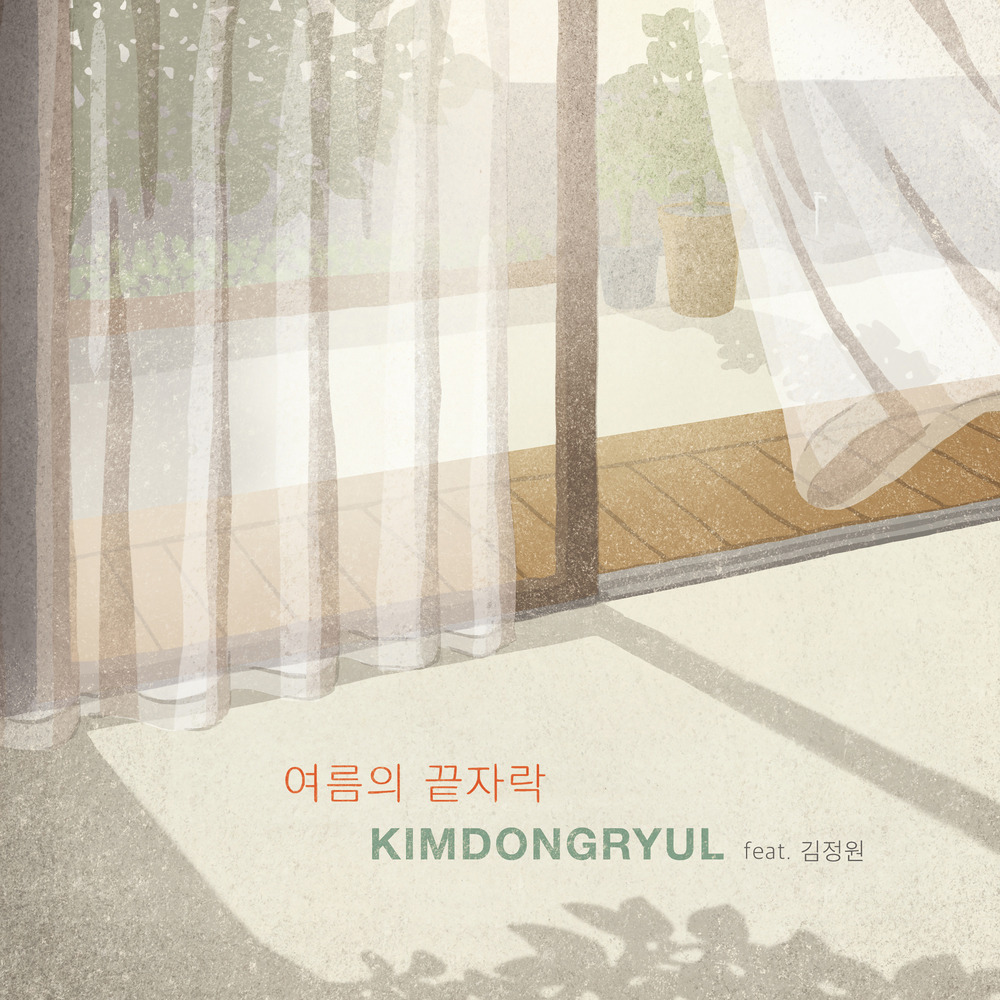

안녕하세요 라보엠입니다.
아직은 열대야가 가시지 않았지만, 처서도 지나고 새벽 공기는 차가워지고 있습니다. 그야말로 여름의 끝자락에 서있는 느낌입니다. 오늘은 이 시기에 어울리는 노래 김동률의 여름의 끝자락(2019)을 소개해드리겠습니다.
김동률 여름의 끝자락 앨범 정보

아티스트: 김동률
앨범명: KIMDONGRYUL LIVE 2019 오래된 노래
피쳐링 아티스트: 김정원
장르: 발라드
발매 : 2019.08.20
여름의 끝자락 MV
이 여름의 끝자락 뮤직 비디오에서는 김동률의 서정적인 노래 가사에 어울리는 제주도의 비오는 풍경과 함께 아이들이 노는 모습, 초록들판에 바람이 일렁이는 풍경이 차분하게 담겨져 있습니다. 영상은 그간 김동률의 뮤직비디오를 작업해온 caska 가 맡아 뛰어난 영상미를 완성해냈습니다.
caska - 여름의 끝자락
여름의 끝자락
Teaser Cast Man 김도건/ Kim, Dogeon Kids 이연두, 이가온, 권호, 양해람, 서하준 (종달초등학교병설유치원) 고현규, 김도현, 이도기, 이하원, 부다영 (종달초등학교) Creators Directed, shot, edited, colored
caska.kr
여름의 끝자락 가사
더운 여름의 끝자락
매미들은 울어대고
느릿느릿 읽던 책 한 권 베고서
스르르 잠든다
내가 찾아간 그 곳은
꿈에서만 볼 수 있는
아침이면 까마득히 다 잊혀질
아득히 먼 그 곳
가물가물 일렁이는
누구일까 애타게 떠올려 봐도
무엇을 찾고 있는지
코끝이 시리다
홀로 걷고 있는 이 길
어제처럼 선명한데
이 길 끝에 나를 기다릴 누군가
마음이 급하다
라라라라 읊조리면
어느샌가 겹쳐진 낯익은 노래
그 순간 눈은 떠지고
바람만 흐른다
또 꿈이었나 멍하니 기지개를 켜다가
젖어 있는 내 두 눈을 비빈다
여름의 끝자락 감상평
김동률의 싱글 여름의 끝자락은 마치 소박한 단편소설의 한 장면이 연상되는 서정적인 노랫말이 돋보입니다. 이 작은 소품곡은 피아니스트 김정원의 연주와 김동률의 목소리로만 이루어져 있는데요, 독일 가곡을 연상시키는 애틋하지만 절제된 멜로디는 피아니스트 김정원의 아름다운 피아노 연주로 더욱 빛을 발하고 있습니다. 이 곡은 김동률과 김정원이 오랜 교류 끝에 협업한 작품이라고 전해지는데요, 김동률의 음악 스타일이 그대로 담겨진 작은 소품들 중 하나입니다. 뮤직비디오는 제주도의 아름다운 여름 풍광을 배경으로 신인배우 김도건의 섬세한 연기와 함께 caska 의 멋진 영상미가 보는 사람의 가슴을 울리는 멋진 영상입니다. 여름을 보내며 이 아름다운 곡을 잠시 감상해보세요.
함께 들으면 좋은 김동률의 노래 - 잔향
여름의 끝자락과 함께 들으면 좋을 노래로 김동률의 잔향을 추천드립니다. 비슷한 3/4 박자의 곡이고 분위기도 비슷합니다. 여름의 끝자락이 여름의 분위기라면, 잔향은 가을의 분위기를 가지고 있습니다.
김동률 잔향 - 가을비와 함께 지나간 사랑의 여운이 남는 노래
안녕하세요 한스입니다. 가을에 듣기 좋은 가을비가 내리면 생각나는 노래가 있습니다. 김동률의 잔향입니다. 김동률 잔향 김동률 잔향 - Youtube 김동률의 음악은 서정적이면서도 깊은 울림을 줍
umm.la-bohe.me